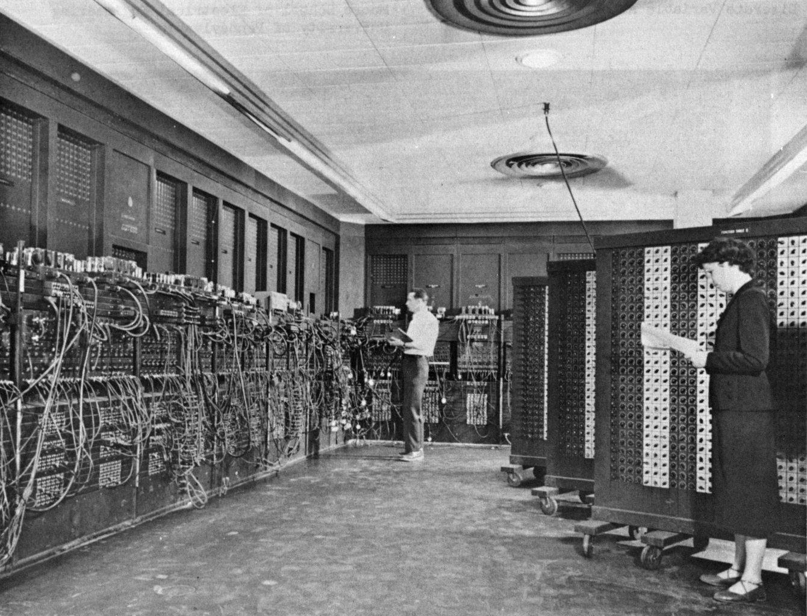
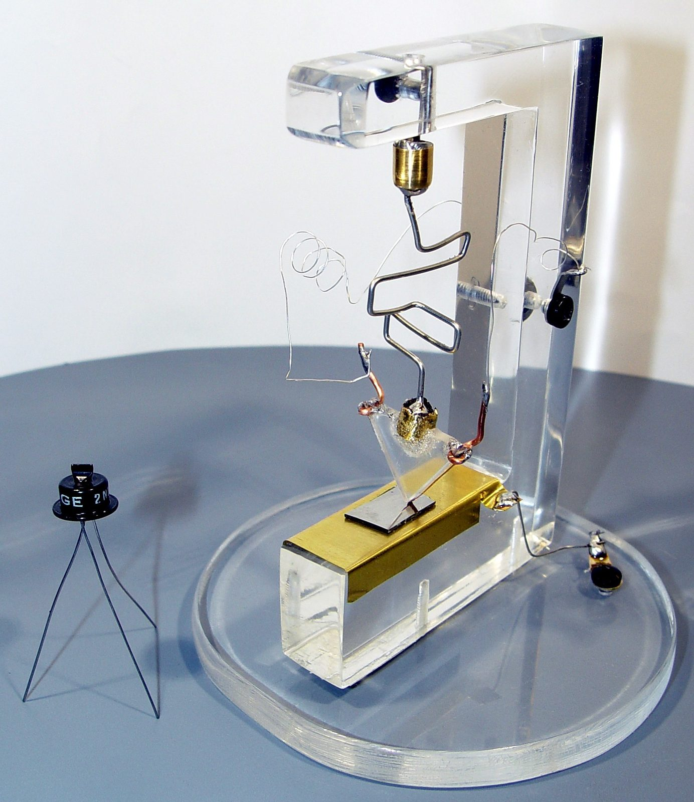

Unit 1 · Lesson 3
Switches
In 1946 a calculator weighed about 27 tonnes and was made of glass switches. Why switches?
The story
In February 1946 the University of Pennsylvania, in the USA, showed ENIAC to the public. It was one of the first electronic computers: a machine that calculates with electricity.
ENIAC filled a large room. It had about 17,500 vacuum tubes and weighed about 27 tonnes. A vacuum tube is a glass tube that works as a switch: the current flows or it does not, on or off. Electricity, not a finger, turns it on and off, so it is very fast.


But tubes were a problem. They were big, they got very hot, they used a lot of power, and they burned out: a tube burned out about every two days. ENIAC was programmed by six women, who planned the calculations and wired the machine by hand.
In December 1947, at Bell Labs in the USA, scientists made the first transistor. A transistor is a switch too, but it is tiny, it stays cool, it has no moving parts and it almost never breaks.


Inside your computer today: the idea of the switch is in every chip. A phone chip holds billions of transistors, and every one of them is on or off.
The science
A switch is a bit
A circuit is a closed loop: a battery pushes an electric current through a wire, a switch and a small light. When the switch is closed, the loop is complete: the current flows and the light is on. When the switch is open, there is a gap: the current stops and the light is off. A switch has only two states, so it stores one bit (the smallest piece of data). We agree: on = 1, off = 0.


Eight switches make a byte: binary 8-4-2-1
Binary means counting with only 0 and 1. Each switch is worth double the one on its right: 128, 64, 32, 16, 8, 4, 2, 1. Add the values of the switches that are on. 00000101 = 4 + 1 = 5. Eight bits make a byte: 256 different values, from 0 to 255. Letters are stored as numbers too, with an agreed table called ASCII: 'A' = 65 = 64 + 1 = 01000001.
Two switches can decide: AND, OR
In series means one after the other, in a row: the current must pass both switches, so the light is on only when A AND B are closed. In parallel means side by side: the current can take either path, so the light is on when A OR B (or both) is closed. A truth table lists every combination of inputs and its output. A processor makes billions of these small decisions every second.
Why the transistor replaced the tube
Both are switches pressed by electricity. A tube is big, hot, uses a lot of power and burns out. A transistor is tiny, cool, uses little power and lasts for years. So engineers could put more and more switches into a machine: from about 17,500 tubes in a room to billions of transistors on one chip.
Check now
Quick questions. You see the answer at once.
A closed switch stands for 1.
True or false?
What is 00001010 in decimal?
Two switches are in series (in a row). When is the light on?
- when either switch is closed
- only when both switches are closed
- only when both switches are open
Try it
Click the bulbs to switch them on. Can you make 65, the letter A? Then make your age and the year you were born, if it fits.
Paper version
Eight bulbs, worth 128 64 32 16 8 4 2 1. To make 65, switch on 64 and 1: 0 1 0 0 0 0 0 1. More examples: 5 = 00000101 (4 + 1) · 10 = 00001010 (8 + 2) · 14 = 00001110 (8 + 4 + 2) · 84, the letter T = 01010100 (64 + 16 + 4) · 255 = 11111111 (all on).
Click the switches to open and close them, and watch the truth table fill in. Start with switches in series, then try parallel.
Paper version
Truth tables (1 = closed / light on, 0 = open / light off). SERIES = AND: A B → light: 0 0 → 0 · 0 1 → 0 · 1 0 → 0 · 1 1 → 1. PARALLEL = OR: A B → light: 0 0 → 0 · 0 1 → 1 · 1 0 → 1 · 1 1 → 1.
Optional. Type your first name to see each letter as a number and as one byte. How many bytes is your name?
Paper version
HI in ASCII: H = 72 = 01001000 · I = 73 = 01001001. Capital letters start at A = 65 (01000001) and end at Z = 90 (01011010); small letters start at a = 97. One letter = one byte.
Your turn
Exercises
From ★☆☆ (easy) to ★★★ (hard). Use a hint if you are stuck.
-
Exercise 1 ★☆☆
An open switch lets the current flow.
True or false?
-
Exercise 2 ★☆☆
Match each way of wiring two switches to what it does.
- two switches in a row (series) — ?
- two switches side by side (parallel) — ?
- one switch alone — ?
-
Exercise 3 ★☆☆
What is 01000001 in decimal?
-
Exercise 4 ★★☆
Which byte is the number 13?
- 00001101
- 00001011
- 00010011
-
Exercise 5 ★★☆
How many different values can one byte (8 bits) store?
-
Exercise 6 ★★☆
A bell must ring when someone opens the front door OR the back door. How do you wire the two door switches?
- in series (in a row)
- in parallel (side by side)
- with only one switch
-
Exercise 7 ★★☆
Put these in time order, from the oldest.
- A phone chip holds billions of transistors
- ENIAC is shown to the public, with about 17,500 vacuum tubes
- The first transistor is made at Bell Labs
-
Exercise 8 ★★★
Why did the transistor replace the vacuum tube? Give two reasons, and say what this made possible.
In one sentence
A switch is a bit; switches in a row or side by side make decisions.
Words of the chapter
- switch
- a part that opens or closes a circuit: on or off interruttore
- vacuum tube
- a glass switch: big, hot, it burns out valvola termoionica
- transistor
- a tiny switch with no moving parts transistor
- bit
- one switch: 1 (on) or 0 (off) bit
- byte
- eight bits: 256 values, from 0 to 255 byte
- binary
- counting with 0 and 1, with the values 8-4-2-1 binario
- series / parallel
- in a row / side by side in serie / in parallelo
- AND · OR
- both must be on · at least one must be on AND · OR (porte logiche)